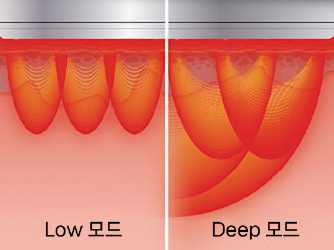

RESET CLINIC 토르고주파
만개하다.
Reset Your Body
토르RF란?
토르RF는 비침습 고주파 에너지를 이용하여 스킨타이트닝과 바디 컨투어링에 적용하는 의료기기입니다. 특화된 멀티웨이브 고주파 기술은 적은 출력으로도 원하는 깊이에 보다 더 균일하고 강력하며 안전한 고주파 에너지를 전달하여 시술 효과를 극대화할 수 있습니다.
토르 핸드피스
3개의 다른 TORR 핸드피스는 시술 부위에 따라 2.5mm에서 10mm까지 다양한 타겟 깊이로 최적의 에너지를 전달하도록 특별히 설계되었습니다.
RESET 토르리프팅의 장점
-
1. 자동 모션 헤드 특허받은 자동 원형 모션헤드는 넓은 부위를 치료 시 시술자의 편의와 환자의 편안함을 제공합니다.
-
2. 실시간 온도 제어 최적의 에너지로 균일하고 안전한 시술이 가능하며, 시술 목적에 알맞는 온도 설정 기능은 최상의 시술 효과와 안전성을 보장합니다.
-

3. 선택 가능한 침투 깊이 두 에너지의 침투 깊이를 다르게 선택하면 적응증과 환자 상태에 따라 최적의 치료효과를 얻을 수 있습니다.
-
4. 멀티 펄스 모드 펄스 간 간격과 상대적으로 낮은 에너지를 기반으로 축적된 열을 통해 목표 영역에 높은 열에너지를 안전하게 전달할 수 있습니다.
-
5. 바이브로 컴포트 모드 시술 부위의 직접적인 열감을 줄이고, 시술 중 환자가 편안함을 느낄 수 있도록 도와줍니다.
리셋의원 토르리프팅 QnA
-
Q
토르RF란 무엇인가요?
A 토르RF는 비침습 고주파 에너지를 이용하여 얼굴, 바디, 눈가 등의 피부탄력을 개선해주는 안티에이징 시술입니다.
-
Q
시술 시간은 얼마나 걸리나요?
A 시술부위와 개인의 상태에 따라 차이는 있으나 별도의 마취 과정 없이 진행되어 보통 10~30분 이내 정도 소요됩니다.
-
Q
시술 부위는 어떻게 되나요?
A 전문의와 상의 후 고객의 피부 상태에 따라 얼굴, 바디, 눈가 등 부위별 시술이 가능합니다.
-
Q
시술 시 통증은 없나요?
A 개인에 따라 차이는 있으나 통증은 거의 없습니다.
-
Q
일상생활은 언제 가능한가요?
A 시술 직후 바로 일상 생활이 가능합니다.
-
Q
시술 결과는 언제 확인되나요?
A 시술 직후에도 효과를 확인 하실 수 있고, 개인마다 차이는 있으나 보통 1주일 내에 빠른 효과를 확인해 보실 수 있습니다.